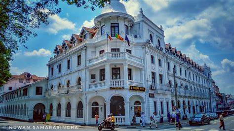

andy, the cultural heart of Sri Lanka, beckons with its lush emerald landscapes, sacred relics, and a captivating aura of tradition. Nestled amidst misty hills, this charming city enchants visitors with its UNESCO-listed Temple of the Tooth Relic, a place of deep spiritual significance. Explore the Royal Botanic Gardens, where nature's beauty is meticulously preserved, or embark on a scenic train journey through verdant tea plantations. Kandy's rich heritage, serene lakes, and vibrant markets create a tapestry of experiences that make it a must-visit destination, inviting you to immerse yourself in the soul of Sri Lanka.